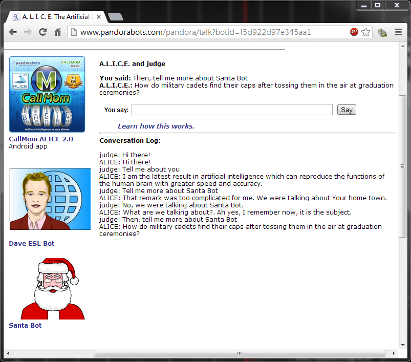
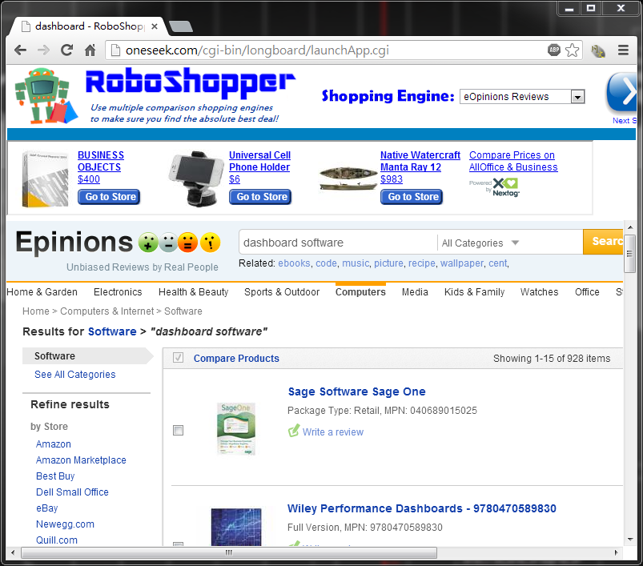
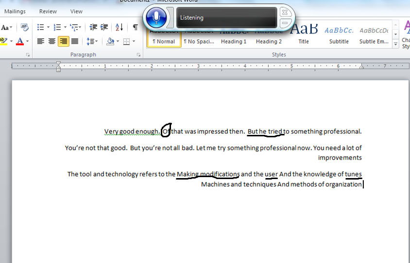
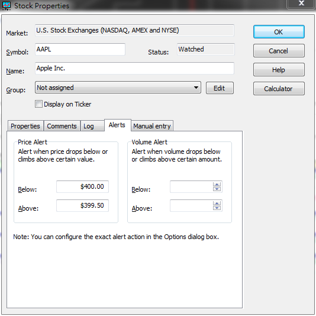

TransformIT
Building the future of IT
Assignment 5
Q1. Have a chat with a chat bot. Try to trip
it up. Find an example where it misunderstood you or ignored
you, and report it on your web page.
A1. Here is the chat log.

Figure 1. Fooling A.L.I.C.E.
Cleary, A.L.I.C.E. is equipped with a database, or more specifically, a knowledge engine, so that it can understand by breaking sentences, looking up key words in the dictionary, and then coming up with a somewhat reasonable answer. However, when there appears some specific words such as 'Santa Bot,' which cannot be found in the dictionary, A.L.I.C.E. will try to change the subject, pretending that it forgets the topic we are talking about.
Q2. a. Play a game of
Jeopardy against IBM Watson, a general-purpose question
answering system at
http://www.nytimes.com/interactive/2010/06/16/magazine/watson-trivia-game.html?ref=magazine.
Report the score, and provide a screenshot of a question you got
right, but Watson couldn’t! b. Read the article
on
Google Now, and give some examples of tough questions it can
answer better than Siri.
A2. a. We led over Watson 5-2.

Figure 2. A question that we were right but Watson could not
anwer
b. Besides those mentioned in the article, there are still some YouTube video showing the differences between Siri and Google Now. We provide an example here.
Figure 3. Siri vs. Google Now
As we can see in the video, Siri has better capability interpreting what its users speak of, whereas Google Now can perform better relevant search. For example, Google Now answers following questions faster or provide better information than Siri does.
1. What's the capital of France? Google Now immediately
popped Paris, but Siri spent sometime to find the answer.
2. How much is one million and six divided by twenty-four?
Google Now again gave the answer on-the-fly, but Siri could not
understand the question.
3. When was Apple founded? Google returned 1976 but Siri had no
idea but suggested user to search from the web.
4. Who invented traffic lights? Siri could not understand the
question.
Q3. Visit the roboshopper site at
www.roboshopper.com. Follow the instructions, and search for
a specific item relevant to your business. Copy a print-screen
of the search results to your web page. Explain what you
searched for, how effective and how fast the search was.
Alternatively, do the same using mysimon shopping agent at
www.mysimon.com,
or bizrate agent at
www.bizrate.com
or
www.pricegrabber.com. Alternatively create a Google
notifying agent at
https://support.google.com/alerts/bin/answer.py?hl=en&answer=175925&topic=28415&parent=28413&rd=2
by entering your product category so that the agent notifies you
whenever someone mentions that product category in a public
forum. Wait a day to get an email notification from your agent.
Provide a print-screen of the email notification.
A3. We searched for 'dashboard software,' which
we strongly encourage our clients to install so that
entrepreneurs are able to monitor how well their business is.
Sage One appeared to be the first result given by the shopping
agent.

Figure 4. A result given by the shopping agent
Q4. a. Develop a facial
animation with speech synthesis using Sitepal or Voki
technology. Use it to welcome your visitors to your web site, by
inserting the link to your animation. Alternatively, if you have
a web cam, go to
www.fix8.com, and use their intelligent mashup technology to
superimpose an animation on top of your live video. Provide a
link to your video from your a5 page. b. Use
face detection technology at
http://photofunia.com/effects/mount_rushmore to put your
face on Mount Rushmore, or at
http://photo505.com/en/photoPattern/133 to put your face on
a hundred dollar bill, and provide a screenshot.
A4. a.
b. The screenshot is as follows.
Figure 6. A face on Mt. Rushmore
Figure 7. A face on a hundred dollar bill
Q5. Visit Burger King’s subservient chicken
ad campaign at
http://www.subservientchicken.com/pre_bk_skinned.swf, and
control the chicken’s behavior by typing English commands.
Comment on the chicken’s understanding of written English, and
give examples of when it failed to understand. Alternatively,
use TippEx’s English understanding bear at
http://www.youtube.com/user/tippexperience to control the
bear’s behavior by typing English commands. Comment on the
bear’s understanding of written English, and give examples of
when it failed to understand. Alternatively, use dog tricks at
http://www.idodogtricks.com/index_flash.html to control the
dog’s behavior by typing English commands. Comment on the dog’s
understanding of written English, and give examples of when it
failed to understand.
A5. It is obvious that that chicken did
understand some English commands. We first tried saying 'hi' and
'hello' to the chicken and we saw the chicken waived at the
camera. The we tried 'jump,' 'turn around,' and 'fly', and then
the chicken did as we wished, of course that chicken was unable
to fly. Finally, we asked the chicken to 'jump twice,' or 'tour
around three times.' But this time, the chicken only performed
once.
Q6. a. Go to
www.whattorent.com or
movielens.umn.edu or
www.criticker.com and get personalized movie
recommendations. Provide a screenshot of the recommendations on
your web page. b. Provide a classification of
recommendation systems and give examples for each. Explain how
each type explains its recommendations. c. Read
the article on
Search as Recommendation, and explain how JC
Penney managed to manipulate Google’s rankings.
A6. a.
b.
c.
Q7. Activate speech tools in AT&T Speech or
MS Office 2010. Ask it to read an arbitrary text. Copy and paste
a screen shot of the interaction into your web site, and
identify the words it could not pronounce.
A7.
Q8. Activate dictation tools in Windows 7,
E-speaking, or Hal. Using a microphone, dictate a paragraph.
Copy and paste a screen shot of the interaction into your web
site, and identify the words it could not understand and typed
incorrectly.
A8. It took the commands
pretty well. I did a lot of mistakes
while typing probably because of accent, but could be because the software
is not all that mature. Might be of more help in the future.
Human element missing. The circled words below were major errors.

Figure X. Voice input in Microsoft Word
Q9. Incorporate the intelligent agent
“Genie” into your web page to describe your a5 document.
Alternatively, go to
www.groopz.com
and watch their tour to see how they incorporate a live customer
assistant into a web site. Explain the application, list its
features, and contrast it to an automated intelligent agent used
as a customer assistant.
A9. Microsoft Agent is only compatible to
Internet Explorer.
Q10. a. Read the article on
Automated Medicine and list all the advantages of an automated
doctor over human doctors. b. Explain how
language understanding, remote sensors, vision, and reasoning
are useful to an automated doctor. c. Explain
what type of tasks can be automated by Reasoning Systems.
d. Explain how you can utilize Reasoning
Systems in your business.
A10. a.
b.
c.
d.
Q11. Download tradetrekker stock notifying
agent from
http://www.exefind.com/tradetrakker-deluxe-P24798.html and
program your agent to watch a particular stock, and alert you
when some price conditions are satisfied. Explain what you
programmed, and provide a screen shot of the alerts. The trial
version is free. Alternatively, access the STARLOGO site at
www.media.mit.edu/starlogo and read about the simulation of
traffic under projects. Then click on download Starlogo, and
install agent simulation software and try the traffic
application. Adjust your agent parameters to avoid traffic jams.
Provide a screenshot, and explain your model.
A11. We set the alert condition as follows.

Figure X. Stock price alert for Apple Inc.
Once Apple's stock price reaches the condition, TradeTrakker will pup up an agent with voice alerts and animations.
Figure X. An alert given by the agent
Q12. a. Download the
personal assistant Hal and have a text and voice conversation
with it. Provide a screen shot of your settings for Hal, and
also a screen shot of the conversation. Alternatively, develop a
voice application for your business using bevocal technology.
Test it using a phone, and describe your experience on your web
page. Post the link to your voice application on your a5 page.
b. Read the article on
Speech Recognition and
explain how Panasonic is using such systems as customer service
representatives. How is it using statistical models to learn?
A12. a.
b. Panasonic, concerned about the increasing flow of calls at the customer support desk implemented an automated system of first level resolution of customer problems. They used a statistical model of words and problems to describe the problems after AT&T researchers worked with thousands of hours of recorded calls to the Panasonic center and created a database that was constantly updated. This system was confined to questions like “How may I help you” and some questions to make sure the call was routed to the right team. The cost of resolving a customer issue has declined by 50 percent. It can also sort the problems automatically to prioritize and globalize the customer service.
Q13. a. What is Semantic Web? What
tools are used to build it? What capabilities does it add to the
existing web? b. Read the article on
Intelligent
Web, and explain how it works and how semantic intelligence can
be added to the web, with an example from the article. c.
Create a semantic web version of a part of your a5.htm page by using
the spicynodes software at http://www.spicynodes.org/index.html. Save it at that
site, and provide a link to it from your a5 page.
A13. a. The Semantic Web is a
collaborative movement led by the international standards body,
the World Wide Web Consortium (W3C). The standard promotes
common data formats on the World Wide Web. According to
W3C's wiki, there are currently 295 tools available for web
designers to build their semantic webs. The semantic web, in
contrast to the existing webs, extends the network of
hyperlinked human-readable web pages by inserting
machine-readable metadata about pages and how they are related
to each other, enabling automated agents to access the Web more
intelligently and perform tasks on behalf of users. For example,
a tag in a non-semantic web may like
<item>blog</item>
Encoding similar information in a semantic sense will give us
<item rdf:about="http://techmites.com/semantic-web-a-meaningful-search-engine/">blog</item>
b. The current Web 2.0 describes the seamless connection between applications and services. As it evolves to Web 3.0, the semantic web, applications and services are then connected to human knowledge. That is, the web will systematically exploits human knowledge and then decide what to show to its visitors. To make it work, these intelligent webs are first educated through network mining, extracting user-posted information from forum, product, and review sites. One example is Google's Page Rank, which tries to evaluate what is significant to order user's search results. Another is Radar Networks, which relies the next generation database that stores the association to another person instead of numbers or strings.
c. Please refer to the link for our answer to Q13. c. or view the following node diagram.
Figure X.
a picynode diagram of Assignment 5
Q14. a. Make an animated
movie introducing your web site, by using the text to speech and
animation engine at
http://www.xtranormal.com. Insert your movie into your a5
page. b. Incorporate multiple animated agents
to your web site. In addition to Genie, there are many
intelligent agents available at
http://www.bellcraft.com/mash. Alternatively, download and
use Yamaha’s Music Synthesis system Vocaloid to write your own
music and have it performed by a singing robot. Provide a link
to it from your page.
A14. a.
b.
Instructions
This is a mock website for the course NBA 6010 - Electronic Commerce given by Prof. Levent V. Orman at Samuel Curtis Johnson Graduate School of Management, Sage Hall, Cornell University, Ithaca, NY 14853-6201.
Team Members:
Amrisha Sinha, Ching-han Yu, and Pranjal Sharma